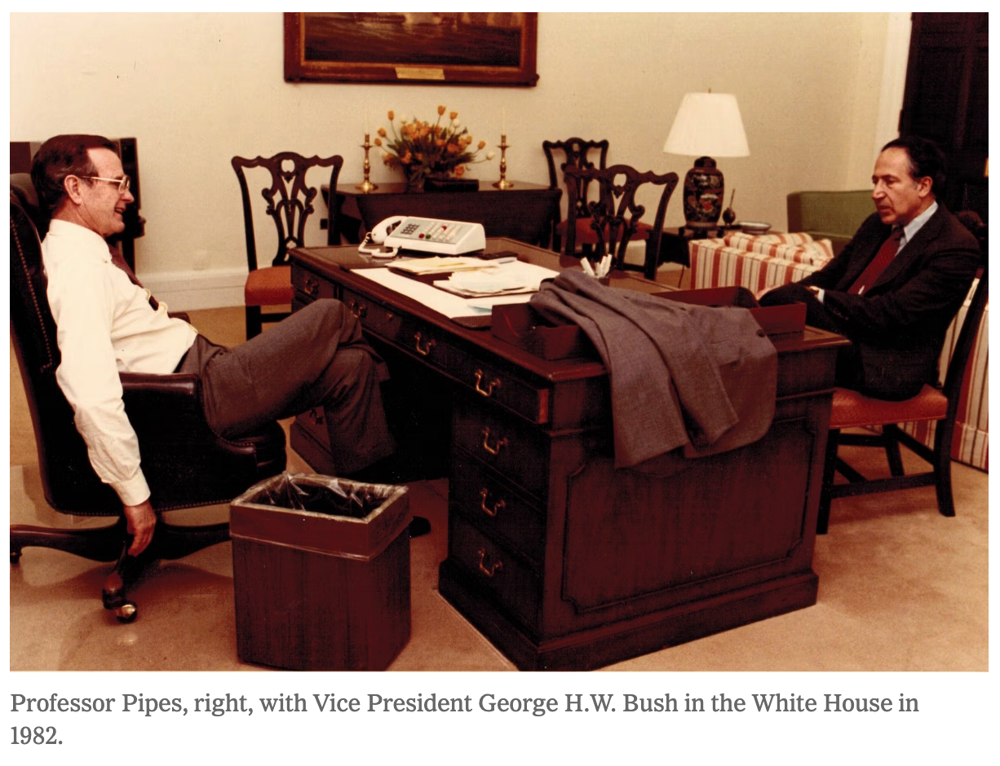

Fusion of Sovereignty and Ownership: Russian monarchs treated the realm and its resources as private property (patrimony), erasing the boundary
Subordinate Property Rights: Unlike Western European feudalism, where nobles held reciprocal rights and independent estates, Russian land and wealth were tied to state service and held at the ruler’s discretion

Continuity and Debate: Scholars have applied Pipes’s framework to examine how patrimonial habits persisted across imperial, Soviet, and post-Soviet politics,including personalistic power networks and territorial views,
while critics note that his broad structural model can oversimplify regional variation, social negotiation, and moments of change